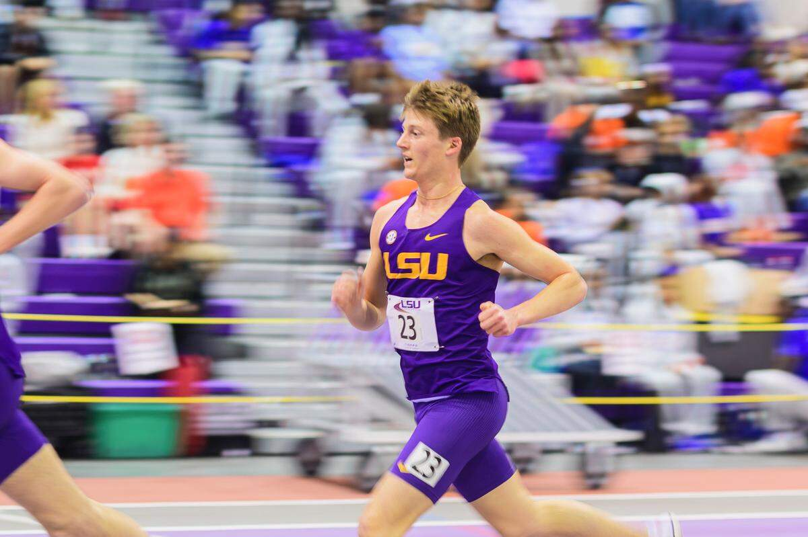
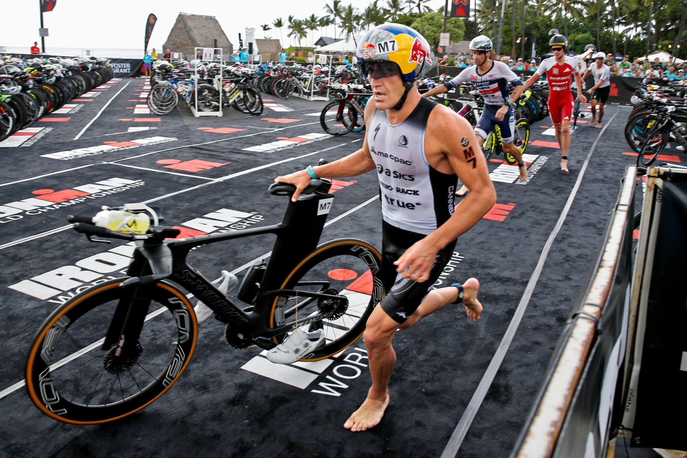
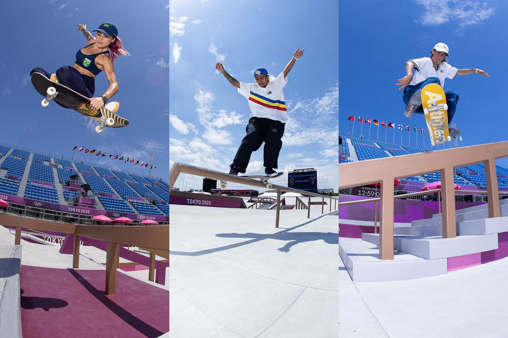
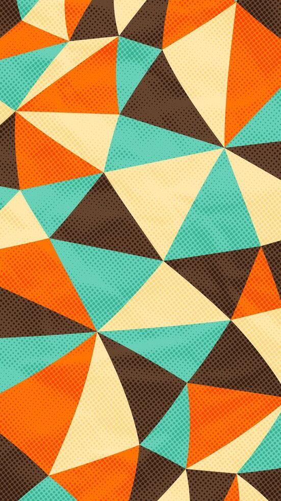
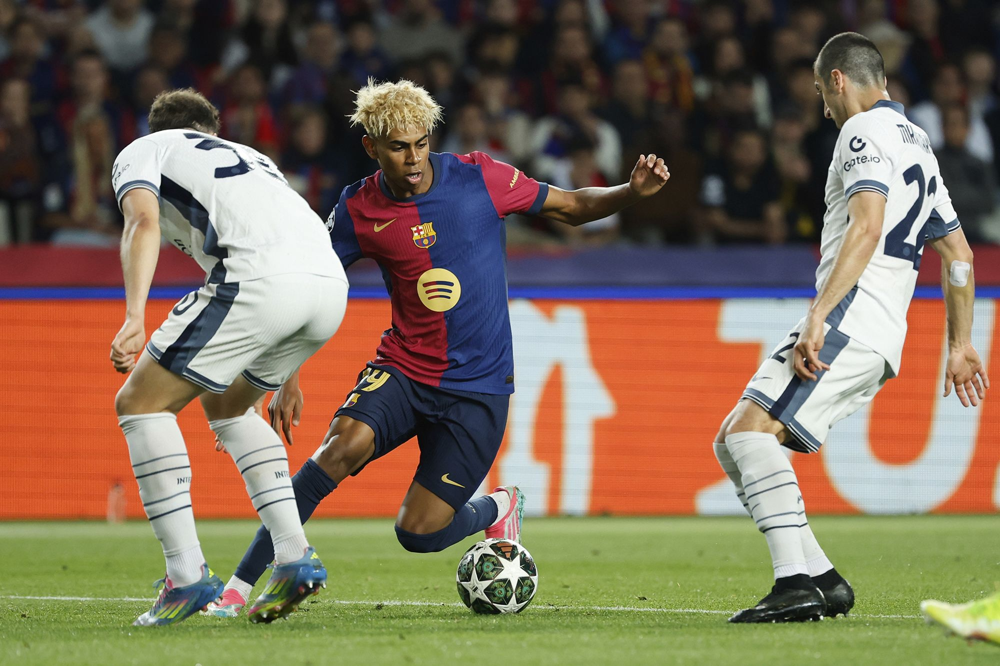

sports:
Running!
I have alawys been decent at running for as long as i could remeber.
I was never the fastest but i was able to beat some of the boys (fastest girl in the 5th grade).
Recently, i have gotten really into running! this year i did track and field and while i was nowhere near winning a medal
it was really really fun seeing my time go down every time i ran a mile!

Triathelon!
I have alaways though the idea of doing a triathlon as really badass especally a full ironman (2.5 mile swim, 112 mile bike and 26.2 mile run back to back). Currently i am "traning" for a super sprint kids triathelon! While the bike and the swim are quite easy for me... i cant swim more than 50 meters and the race is 150 meters of swimming lol

Skateboarding!
Every since i got a skateboard for christmas me and my friend have been skateing a lot! Its been really fun expolring all the local skateparks! I have learned to ollie, ride around and be comfortable going down ramps (i am gonna drop in the weekend hehe) I think i skateboarding is really fun and i really want to be a ble to grind on stuff :)


Soccer!
I have been playing soccer since i was 6, for almost my entire life i played on a rec team called the dolphins and it was awsome! but for fun in the 7th grade i tried out for a comp soccer team and my area on got on the team! I have been playing for them for 2 years and its been great.
